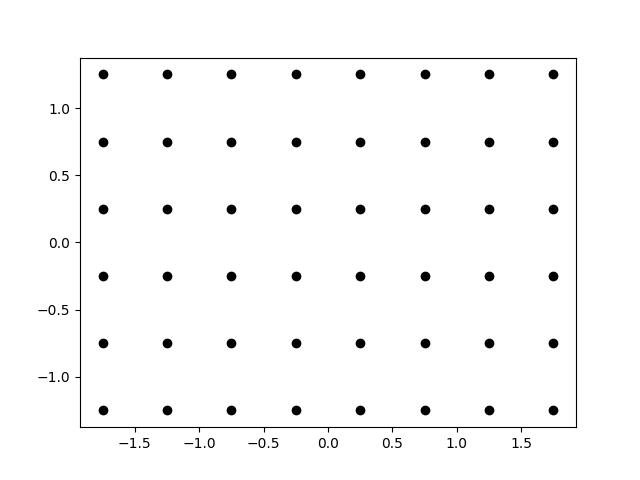

トップ>
リファレンス>
Floor>
get_lattice
Floor.get_lattice
get_lattice(
delta:float
)->numpy.ndarray
概要
捜索範囲内の格子点を取得します。
格子点同士の間隔は引数deltaで指定します。
引数
| 名称 |
型 |
概要 |
| delta |
float |
格子点同士の間隔 |
戻り値
型：numpy.ndarray
概要：
3次元配列を返します。1番目の添字は格子点が左から何番目か、2番目の添字は格子点が上から何番目か、3番目の添字は0ならば格子点のx成分を、1ならばy成分を表します。
使用例
格子点をMatplot1ibを用いて可視化するスクリプトです。
from wilitools import Floor
import matplotlib.pyplot as plt
floor = Floor(-2.0, 2.0, -1.5, 1.5)
lat = floor.get_lattice(0.5)
plt.figure()
for r in range(lat.shape[0]):
for c in range(lat.shape[1]):
plt.scatter(lat[r,c,0], lat[r,c,1], color='black')
plt.show()
出力画像
